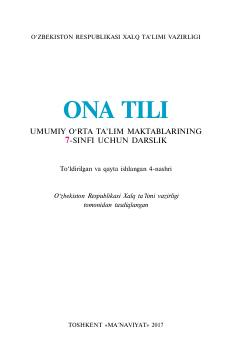

OT7-sinf o'quvchilari uchun ona tili fanidan rasmiy darslik.
Ushbu darslik umumiy o'rta ta'lim maktablarining 7-sinf o'quvchilari uchun mo'ljallangan bo'lib, ona tili fanidan chuqur bilim berishga qaratilgan. Kitobda fonetika, leksika va boshqa bo'limlar yuzasidan nazariy ma'lumotlar hamda amaliy mashqlar keltirilgan.